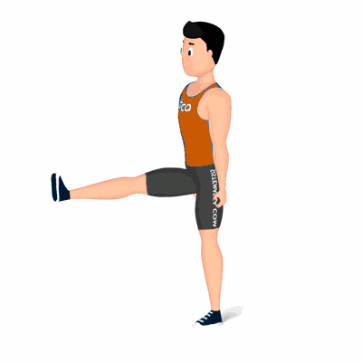

Flexão de Quadril Joelho Estendido

Exercício para fortalecimento e hipertrofia da região das coxas, com enfoque aos músculos reto femorais, vasto laterais e mediais. Indicado a iniciante, fácil execução.
Ficha Técnica
Tipo: Musculação
Grupo Muscular: Perna
Aparelho: Nenhum
Músculos: Nenhum
Como realizar
- Posicione em pé, cabeça e coluna e alinhadas;
- Manter o joelho direito estendido, elevar a perna para frente ao seu corpo o mais alto que conseguir, mantendo o troco imóvel;
- Retorne à posição inicial de forma controlada com a perna estendida;
- Repita os movimentos, conforme o número de repetições orientado pelo o professor;
- Ao termino das repetições, realize os movimentos com o membro contralateral, perna esquerda.
 RC STORE
RC STORE